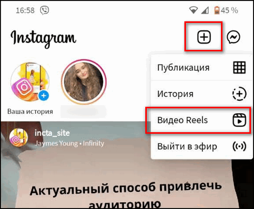
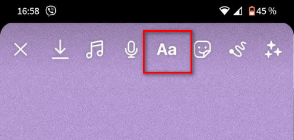
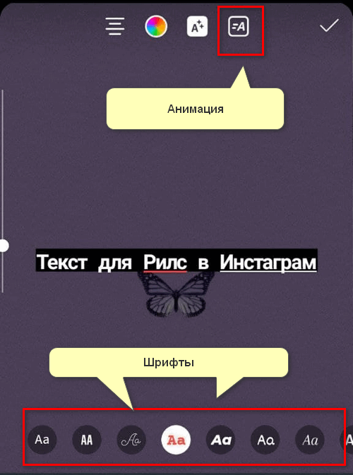
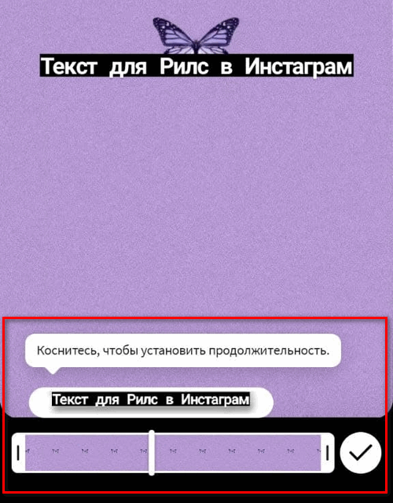
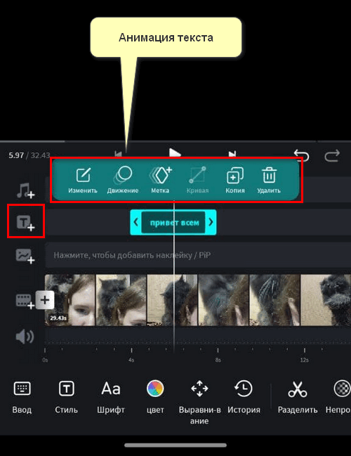
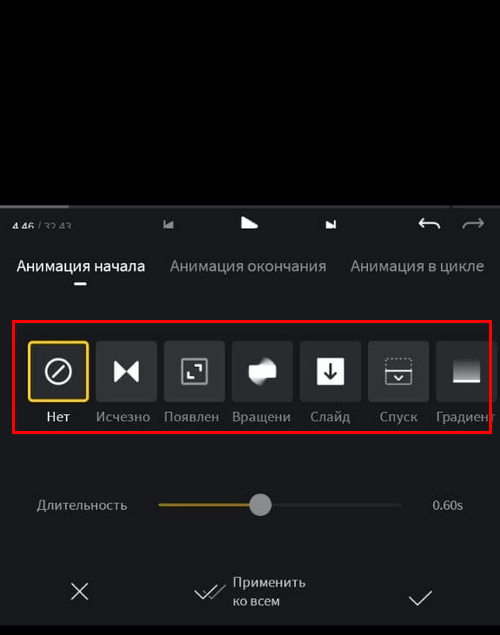

Добавить текст в Рилс Инстаграма: 3 способа

В Рилс Инстаграма* сделать текст возможно с помощью встроенного текстового редактора или через сторонние приложения. В разделе с редактором текста можно выбрать анимационные эффекты и разные шрифты.
Создание Рилс с текстом в Инстаграме*
В редакторе видео в Инстаграме* можно добавлять текст, редактировать его оттенок и добавлять анимационное появление. Эти параметры доступны, как при создании клипа через «Камеру», так и с помощью загрузки из Галереи.
Как сделать текст на видео, если записать клип с помощью камеры:
- Зайти в Инстаграм* – нажать сверху: «Опубликовать».
- Выбрать «Reels» - записать клип любой продолжительности.

- Далее – сверху появится три инструмента, среди которых «Текст».
- Вписать нужную цитату – выбрать шрифт.

- Сверху доступны разные варианты отображения шрифта, анимацию.
- Предпросмотр – Опубликовать.

Добавляя текст в Рилс Инстаграма* доступен тот же набор инструментов, что и для Историй. Те же шрифты, анимация, которые можно добавить на видеоклип.
Сделать исчезающие в Reels через стикер
В Reels есть два способа, как создать исчезающий текст:
- воспользоваться таймлайном. При добавлении нескольких цитат, снизу появится временная шкала, где можно разместить текст по времени;
- использовать функцию текста с анимацией.
Как сделать текст с помощью таймлайна:
- Перейти к добавлению записи – сверху инструмент: «Текст».
- Добавить цитату – появится временная шкала.

- Выбрать справа или слева границы клипа, чтобы указать расположение надписи.
- Сделать еще несколько текстовых пометок – указать их время появления.
В отличие от Тик Тока, в Рилс механизм добавления текста и выбора его времени, сложнее и неудобнее. Это заметно в моменте добавления крупной текстовой заметки, где предыдущая цитата будет выделена на экране и при предпросмотре – перекрывать новую.
В Reels добавлять текст поочередно возможно и через стандартную функцию анимации:
- Зайти в создание Рилс – записать видео или воспользоваться клипом из Галереи.
- Перейти к добавлению текста – сверху кнопка: «А» с двумя горизонтальными полосками.
- Выбрать вариант появления текста.
Анимация зависит от шрифта, который был выбран автором. Например, для машинного текста способ отображения – быстрая печать, как на печатной машинке.
Используем приложения для Инстаграма*
Кроме того, что сделать исчезающий текст в Рилс Инстаграма* возможно через стандартные инструменты, есть дополнительные приложения. В них можно отредактировать не только текстовую составляющую, но и визуал для дальнейшего размещения в социальной сети. ТОП-3 приложений для Instagram*:
- Canva. Полноценный редактор и каталог уже готовых клипов, где можно выбирать до сотни новых шрифтов, анимацию появления;
- VN. Видеоредактор, который поддерживает работу с отдельными дорожками, привязку текста к движущемуся объекту;
- Alight Motion. Добавить на видео текст, изменить оттенок отдельных частей, сделать 3D-анимацию.
С помощью VN можно сделать текст внезапно появляющийся:
- Скачать и установить приложение с помощью Play Market (ссылка выше).
- Открыть – снизу: «Проект».

- Выбрать видео из Галереи – запись появится на временной шкале.
- Нажать сбоку по символу «Т» - добавить текст.

- Появится функция: «Анимация» - указать эффект для появления надписи.
- Сохранить видео – перейти в Инстаграм* и опубликовать.
Приложение поддерживает до пяти шаблонов и один, который выполнен в виде слоя-маски. Он закрывает весь экран, поэтому можно выбирать другие шаблоны, которые не затеняют.
Изменить текст в Рилс Инстаграма*
После размещения Рилс редактировать текстовую надпись запрещено. Поэтому, единственный вариант, который остается пользователю – удалить и переопубликовать заново. Для редактирования в меню предпросмотра:
- В видео выделить текст, который был добавлен.
- Вписать новый или полностью удалить.
Теперь с таймлайна исчезнет надпись и можно добавлять любую новую. Если переопубликовать, то придется весь текст переписывать. Reels поддерживает такие режимы редактирования после размещения публикации:
- изменить обложку. Выбрать из видео или из Галереи;
- отредактировать описание;
- отметить пользователей, которые участвовали в записи видео или показаны в видеоряде.
Чтобы перейти к меню редактирования описания:
- Выбрать в Ленте публикаций Reels.
- Открыть в полном формате – снизу три точки.
- Редактировать – указать новое описание.
- Сохранить.
Автор может полностью переписать текстовую часть в описании, а также с помощью символа «@» указать участников.